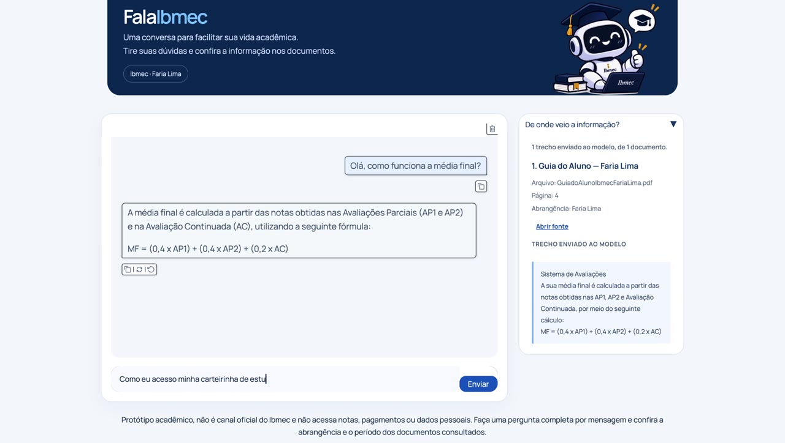

Processamento de Linguagem Natural · Projeto final
Um chatbot RAG que responde dúvidas acadêmicas da graduação a partir dos documentos institucionais e mostra de onde veio cada resposta.
Caio Jardim e Hugo Toledo
Ciência de Dados e Inteligência Artificial · Ibmec Faria Lima
Novembro de 2026
O problema
em 3 manuais e guias em PDF, além do calendário acadêmico 2026.2
do site do Ibmec (blog e páginas para alunos), coletadas em HTML
de páginas com conteúdo sobreposto entre fontes diferentes
divergentes da regra de elegibilidade para a AS entre manual e guia
O que o sistema precisa fazer
Fundamentação
Retrieval-Augmented Generation (Lewis et al., 2020): recuperar trechos relevantes e entregá-los à LLM junto com a pergunta.
| Abordagem | Conhece os documentos do Ibmec? | Mostra a fonte? | Atualiza sem retreinar? | Custo para o projeto |
|---|---|---|---|---|
| LLM sozinha | Não: só o que viu no treino | Não | Não | Baixo |
| Fine-tuning | Parcialmente, nos pesos | Não | Não: novo treino a cada mudança | Alto: dados e GPU |
| RAG | Sim: lê os trechos na hora | Sim: os trechos usados | Sim: basta trocar a base | Moderado |
Base documental
Cada registro é uma página de PDF, uma região mensal do calendário ou uma página HTML. Todos os 130 originais foram contabilizados.
Janelas de 120 tokens com sobreposição de 20, dentro do limite de 128 do Serafim. 9 fontes mantidas.
Experimento de NER
INSTITUICAO Ibmec UNIDADE Faria Lima
SERVICO_ACADEMICO matrícula, estágio, carteirinha…
“O sistema matricula os alunos” e “Eu estagio em uma empresa”: verbos reconhecidos como serviço acadêmico.
v2: filtro com a classe gramatical do spaCy e o pronome “eu” antes da palavra.
8 frases sintéticas, escritas conhecendo as regras e com apoio de IA. Não estima desempenho geral. O NER não participa do RAG.
Falsos positivos: 2 → 1. Verdadeiros positivos: 9 nas duas versões. Falsos negativos: 0.
Arquitetura
Encoder de sentenças treinado para recuperação de informação em português. Perguntas e trechos viram vetores de 768 dimensões e são comparados pelo significado, e não pela coincidência de palavras. Roda pela biblioteca Sentence Transformers, sem GPU, e cabe no limite de 128 tokens dos nossos trechos.
Demonstração

Média final: fórmula com a fonte Guia do Aluno, p. 4, Faria Lima
Carteirinha e documentação de estágio: passos no SIA
“Qual foi minha nota da AP1 ontem?”: recusa e aviso no painel de fontes
Gravado na v2 (versão final) no Google Colab, GPU T4, com o Qwen 7B em execução real.
Avaliação · piloto da v1 (protótipo inicial)
grupos cobertos / gruposRecall@3 e cobertura do contexto
corretas e sustentadas (revisão assistida por IA)
recusas corretas, com 0/4 indevidas
Comparações · v2 (versão final)
Mesma sessão e mesmo modelo, uma execução por pergunta. A recusa foi detectada pelo texto; a correção das demais respostas não foi revisada. A recusa indevida do amplo é a média final. A 1ª chamada do amplo (carteirinha) levou 15,2 s; sem ela, a diferença de tempo cai para cerca de 0,9 s.
Onde ainda erra
v1: protótipo inicial · v2: versão final, com a nova interface. Mesma base, mesma busca e mesmo modelo.
Cada pergunta é processada sozinha, mesmo com o histórico na tela.
O painel mostra o que o modelo leu, não confere cada afirmação.
A curadoria não confirma se todas as regras estão em vigor hoje.
Pode descartar evidências que estão em outra página.
Conclusão
Perguntas?